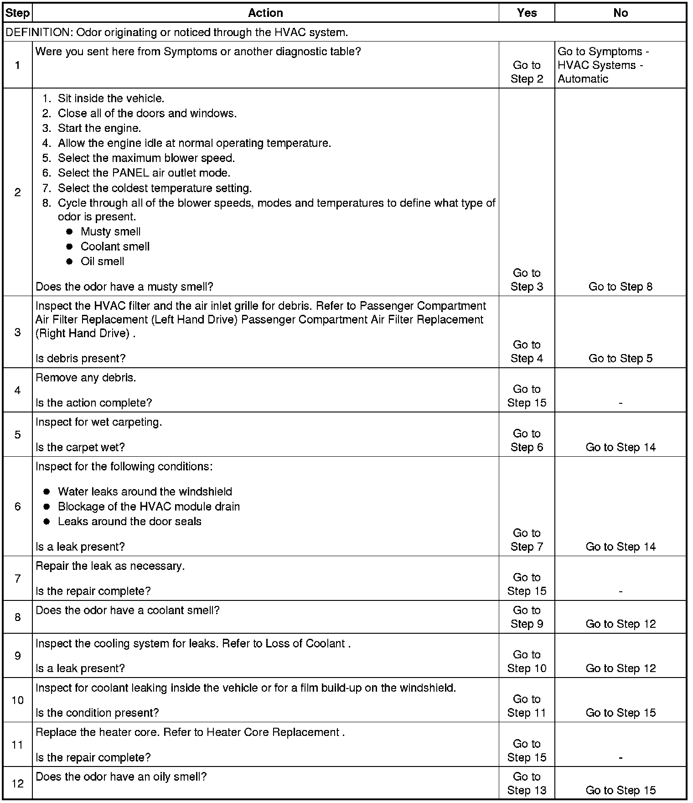
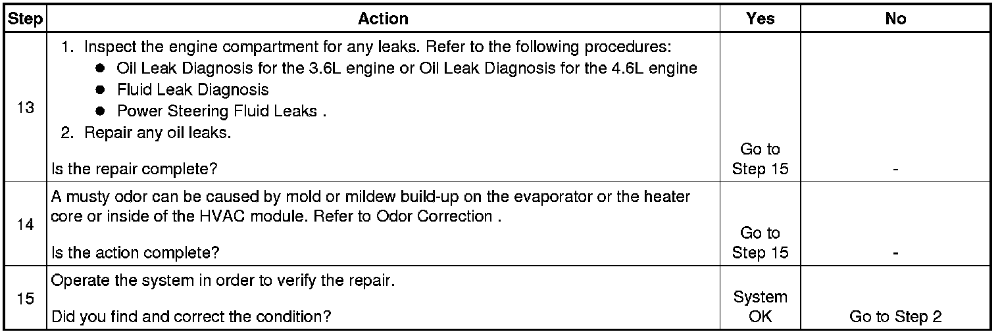

Operation CHARM
: Car repair manuals for everyone.
Home
>>
Cadillac
>>
2008
>>
SRX AWD V8-4.6L
>>
Repair and Diagnosis
>>
Heating and Air Conditioning
>>
Testing and Inspection
>>
Symptom Related Diagnostic Procedures
>>
Diagnosis By Symptom - Heating, Ventilation and Air Conditioning
>>
Odor Diagnosis
Odor Diagnosis
Odor Diagnosis

